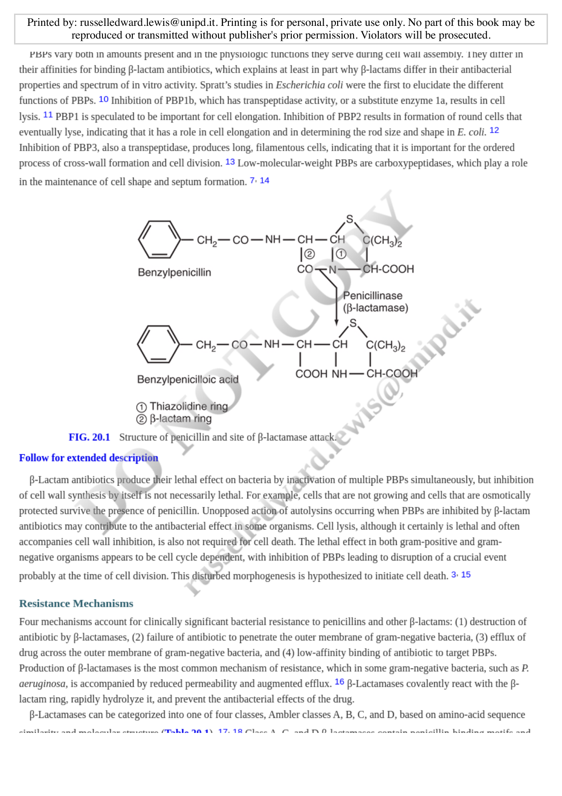
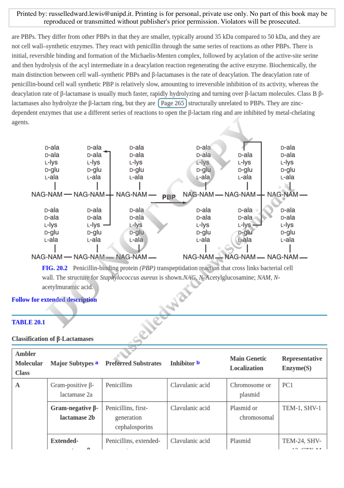
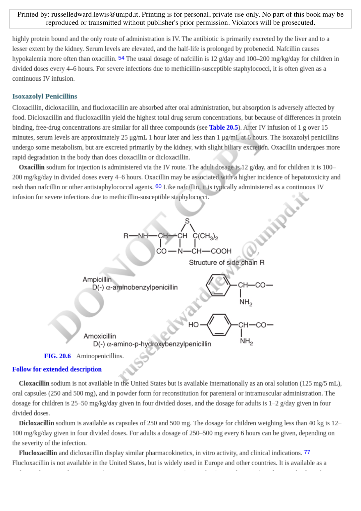
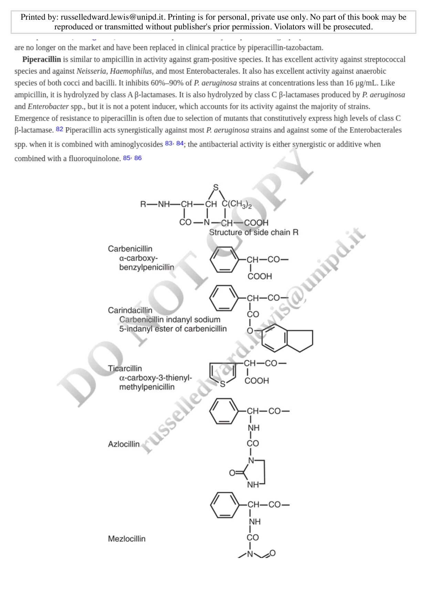

Natural Penicillins and β-Lactamase Inhibitors
Short View Summary
Penicillin G
- Usual Adult Dose: 8–24 Million Units/Day Intravenously (IV) in Equally Divided Doses Every 4–6 Hours
- Renal and hepatic failure: decrease dose in renal failure
- CSF penetration: poor
- Adverse effects: hypersensitivity reaction, hyperkalemia (potassium salt), hypokalemia (sodium salt)
Penicillin V
- Usual Adult Dose: 250–500 mg Every 6–12 Hours Orally
- Renal and hepatic failure: decrease dose in renal failure
- CSF penetration: poor
- Adverse effects: hypersensitivity reaction, nausea/vomiting
Oxacillin
- Usual Adult Dose: 2 g Every 4 Hours IV
- Renal and hepatic failure: no adjustment
- CSF penetration: poor
- Adverse effects: hypersensitivity reaction, hepatotoxicity, interstitial nephritis
Nafcillin
- Usual Adult Dose: 2 g Every 4 Hours IV
- Renal and hepatic failure: no adjustment
- CSF penetration: low
- Adverse effects: hypersensitivity reaction, interstitial nephritis, hepatotoxicity, hypokalemia
Ampicillin
- Usual Adult Dose: 2 g Every 4–6 Hours IV
- Renal and hepatic failure: decrease dose in renal failure
- CSF penetration: low
- Adverse effects: hypersensitivity reaction
Ampicillin-Sulbactam
- Usual Adult Dose: 1.5–3 g Every 6 Hours IV
- Renal and hepatic failure: decrease dose in renal failure
- CSF penetration: low
- Adverse effects: hypersensitivity reaction, diarrhea
Amoxicillin
- Usual Adult Dose: 500 mg to 1 g Every 8–12 Hours Orally
- Renal and hepatic failure: decrease dose in renal failure
- CSF penetration: low
- Adverse effects: hypersensitivity reaction
Amoxicillin-Clavulanate
- Usual Adult Dose: 500 mg Every 8 Hours Orally or 875 mg Every 12 Hours Orally
- Renal and hepatic failure: decrease dose in renal failure
- CSF penetration: low
- Adverse effects: hypersensitivity reaction, diarrhea
Piperacillin-Tazobactam
- Usual Adult Dose: 3.375–4.5 g Every 6–8 Hours IV
- Renal and hepatic failure: decrease dose in renal failure
- CSF penetration: low
- Adverse effects: hypersensitivity reaction, diarrhea
1 Introduction to Penicillins
Penicillin was discovered by Alexander Fleming from Penicillium notatum (now Penicillium chrysogenum) in 1928 (3). The subsequent work of Florey, Chain, and associates to isolate penicillin made possible the commercial production of penicillin G (2). By the middle of the 1940s, penicillin G was available for use in the United Kingdom and the United States, thus initiating the modern antibiotic era.
2 Chemistry
The basic structure of penicillins is a nucleus consisting of a thiazolidine ring, the β-lactam ring, and a side chain (Figure 1). The core ring structures, particularly the β-lactam ring, are essential for antibacterial activity. The side chain determines in large part the antibacterial spectrum and pharmacologic properties of each penicillin agent.

Emergence of β-lactamase–producing organisms, including Staphylococcus aureus, prompted development of compounds resistant to hydrolysis by β-lactamases and the search for agents with expanded gram-negative activity. The isolation of the penicillin nucleus, 6-amino-penicillanic acid, from a precursor-depleted fermentation of Penicillium chrysogenum made possible the production and testing of semisynthetic penicillins, including methicillin (active against β-lactamase–producing S. aureus), ampicillin (active against selected gram-negative bacilli), and carbenicillin (active against Pseudomonas aeruginosa).
3 Mechanism of Action
The antibacterial activity of penicillin, as it is for all β-lactam antibiotics, is triggered by its inhibition of bacterial cell wall synthesis. Although the precise mechanism by which penicillin kills bacterial cells is not fully known, production of deleterious hydroxyl radicals that irreversibly damage the cell appears to be a common pathway of bactericidal antibiotics such as β-lactams, but not bacteriostatic antibiotics.
3.1 Cell Wall Structure
The cell wall of both gram-positive and gram-negative bacteria is composed of peptidoglycan, which allows cells to contain and resist high osmotic pressure. The cell wall of gram-positive bacteria is a substantial layer 50–100 molecules in thickness, whereas in gram-negative bacteria it is only one or two molecules thick. An outer membrane lipopolysaccharide layer, not found in gram-positive bacteria, is present in gram-negative species.
3.2 Peptidoglycan Synthesis
The basic subunit of the peptidoglycan component is a disaccharide monomer of N-acetylglucosamine (NAG, or GlcNAc) and N-acetylmuramic acid (NAM, or MurNAc) pentapeptide (Figure 2).
Penicillin inhibits enzymes that catalyze the final step in bacterial cell wall assembly, which is the formation of the cross-links that bridge peptidoglycan, giving the cell its structural integrity.

3.3 Penicillin-Binding Proteins (PBPs)
The penicillin-sensitive reactions are catalyzed by a family of closely related proteins, called penicillin-binding proteins (PBPs). Bacteria produce four types of PBPs, which structurally resemble and are likely derived from serine proteases. High-molecular-weight PBPs (i.e., >50 kilodaltons [kDa]) and low-molecular-weight PBPs catalyze transpeptidation and carboxypeptidation reactions of cell wall assembly, respectively.
β-Lactamases are PBPs that catalyze hydrolysis of the β-lactam ring. The main distinction between cell wall–synthetic PBPs and β-lactamases is the rate of deacylation—slow for PBPs (leading to inhibition) and fast for β-lactamases (conferring resistance).
| PBP | Function | Effect of Inhibition |
|---|---|---|
| PBP1b | Transpeptidase activity | Cell lysis |
| PBP1 | Cell elongation | Formation of round cells |
| PBP2 | Cell elongation and shape | Round cells in E. coli |
| PBP3 | Cross-wall formation | Long, filamentous cells |
| Low-MW PBPs | Carboxypeptidases | Cell shape maintenance |
4 Resistance Mechanisms
Four mechanisms account for clinically significant bacterial resistance to penicillins and other β-lactams:
- Destruction of antibiotic by β-lactamases — the most common mechanism
- Failure of antibiotic to penetrate the outer membrane of gram-negative bacteria
- Efflux of drug across the outer membrane of gram-negative bacteria
- Low-affinity binding of antibiotic to target PBPs
Production of β-lactamases is the most common mechanism of resistance, which in some gram-negative bacteria, such as P. aeruginosa, is accompanied by reduced permeability and augmented efflux.
4.1 Classification of β-Lactamases
β-Lactamases can be categorized into one of four classes, Ambler classes A, B, C, and D, based on amino-acid sequence similarity and molecular structure (Table 2) (1).
| Ambler Class | Major Subtypes | Preferred Substrates | Inhibitor | Representative Enzymes |
|---|---|---|---|---|
| A | ESBLs, KPC | Penicillins, cephalosporins, carbapenems | Clavulanic acid, Avibactam | TEM, SHV, CTX-M, KPC |
| B | Metallo-β-lactamases | All β-lactams except aztreonam | EDTA, chelators | NDM, VIM, IMP |
| C | AmpC | Cephalosporins | Cloxacillin, Avibactam | AmpC, CMY |
| D | OXA enzymes | Oxacillin, carbapenems | Variable | OXA-48 |
5 Classification of Penicillins
Penicillins can be divided into five classes on the basis of antibacterial activity:
- Natural penicillins — penicillin G, penicillin V
- Penicillinase-resistant penicillins — nafcillin, oxacillin, dicloxacillin, flucloxacillin
- Aminopenicillins — ampicillin, amoxicillin
- Carboxypenicillins — carbenicillin, ticarcillin
- Acyl ureidopenicillins — azlocillin, mezlocillin, piperacillin
5.1 Spectrum of Activity
| Organism | Penicillin G | Ampicillin | Oxacillin | Piperacillin |
|---|---|---|---|---|
| S. pneumoniae | 0.03 | 0.03 | 0.13 | 0.05 |
| S. pyogenes | 0.015 | 0.03 | 0.13 | 0.2 |
| E. faecalis | 2 | 1 | 16 | 4 |
| S. aureus (MSSA) | NA | NA | 0.13 | 0.8 |
| H. influenzae | 1 | 0.25 | 32 | 0.1 |
| E. coli | 200 | >200 | 200 | 32 |
| P. aeruginosa | >200 | >200 | >200 | 32 |
6 Pharmacologic Properties
| Penicillin | Oral Absorption (%) | Protein Binding (%) | Half-life (h) | Renal Adjustment |
|---|---|---|---|---|
| Penicillin G | NA | 60 | 0.7 | Yes |
| Penicillin V | 60 | 80 | 0.5–0.8 | Yes |
| Oxacillin | NA | 90 | 0.4–0.7 | No |
| Nafcillin | NA | 90 | 0.5–1 | No |
| Ampicillin | 33–54 | 20 | 1–1.3 | Yes |
| Amoxicillin | 74–80 | 20 | 1–1.3 | Yes |
| Piperacillin | NA | 48 | 0.9 | Yes |
Most penicillins penetrate the CNS poorly under normal conditions. Inflammation alters normal barriers, permitting entry of penicillins, which achieve concentrations in CSF of 5%–10% for penicillin G and 13%–14% with ampicillin.
7 Untoward Reactions
7.1 Hypersensitivity Reactions
The most important adverse effects of the penicillins are hypersensitivity reactions, which range in severity from rash to anaphylaxis. Penicillins can act as haptens to combine with proteins.
Although a history of penicillin allergy is quite common, less than 2% will have an allergic reaction if challenged. True anaphylactic reactions to penicillins are rare (<0.01%); skin-testing and oral challenges have been used successfully to de-label patients with a penicillin allergy (5).
7.2 Other Adverse Effects
- Neurologic: Seizures (high doses, renal failure)
- Hematologic: Neutropenia, platelet dysfunction
- GI: Nausea, diarrhea, C. difficile infection
- Renal: Interstitial nephritis (methicillin, nafcillin)
- Hepatic: Elevated transaminases, cholestatic jaundice
- Electrolyte: Hypokalemia (nafcillin), hyperkalemia (K⁺ penicillin G)
8 Individual Penicillins
8.1 Aminopenicillins
The antibacterial activities of aminopenicillins are similar (Figure 3). They are susceptible to hydrolysis by β-lactamases.

8.1.1 Ampicillin
Ampicillin is available for oral use as 250- or 500-mg capsules. For most indications, oral amoxicillin is preferred because of greater bioavailability.
8.1.2 Amoxicillin
Amoxicillin differs from ampicillin only in the presence of hydroxyl group in the para position of the benzene side chain. It is significantly better absorbed (74–80% vs 33–54%).
High-dose amoxicillin (80–90 mg/kg/day) is first-line therapy for otitis media in children because it covers penicillin-resistant pneumococci.
8.2 Antipseudomonal Penicillins
8.2.1 Piperacillin
Piperacillin is similar to ampicillin in activity against gram-positive species but has excellent activity against P. aeruginosa (Figure 4).

Piperacillin is now used exclusively in the United States as a piperacillin-tazobactam combination to extend its activity against class A β-lactamase–producing strains.
9 β-Lactam and β-Lactamase Inhibitor Combinations
Six β-lactamase inhibitors are currently in clinical use: clavulanic acid, sulbactam, tazobactam, avibactam, relebactam, and vaborbactam (4).
| Inhibitor | Partner Drug | Class A | Class C | KPC |
|---|---|---|---|---|
| Clavulanate | Amoxicillin | ✓ | ✗ | ✗ |
| Sulbactam | Ampicillin | ✓ | ✗ | ✗ |
| Tazobactam | Piperacillin | ✓ | ✗ | ✗ |
| Avibactam | Ceftazidime | ✓ | ✓ | ✓ |
| Vaborbactam | Meropenem | ✓ | ✓ | ✓ |
Reports of failure with β-lactam/β-lactamase inhibitors for treatment of serious infections caused by ESBL-producing organisms suggest that activity in vivo may not be predictable. None of the currently approved β-lactamase inhibitors inhibit class B metallo-β-lactamases.
10 Summary
Penicillins remain important antibiotics in clinical practice, particularly when combined with β-lactamase inhibitors. Key points include:
- The β-lactam ring is essential for antibacterial activity
- PBPs are the molecular targets of β-lactams
- Four mechanisms of resistance exist: β-lactamase production, decreased permeability, efflux, and altered PBPs
- Classification includes natural, antistaphylococcal, aminopenicillins, and antipseudomonal penicillins
- β-Lactamase inhibitors restore activity against many resistant organisms but have limitations